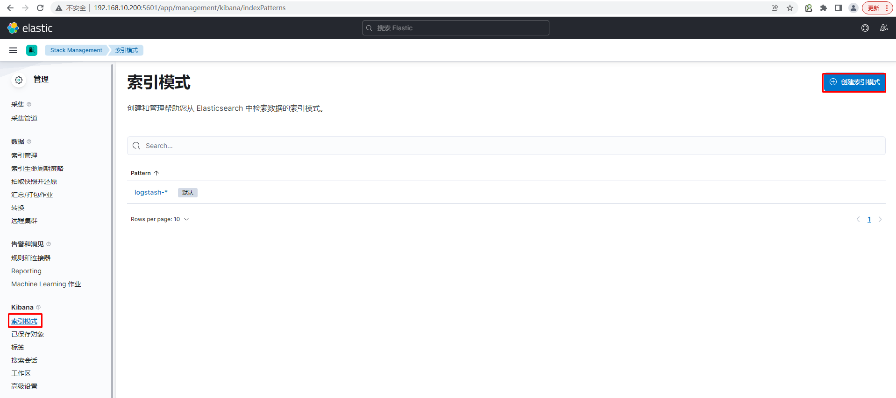

kubernetes日志收集方案¶
kubernetes日志收集方案 ELK¶
一、为什么收集日志¶
收集日志可以用于：
- 分析用户行为
- 监控服务器状态
- 增强系统或应用安全性等。
二、收集哪些日志¶
- kubernetes集群节点系统日志
- kubernetes集群节点应用程序日志
- kubernetes集群中部署的应用程序日志
三、日志收集方案¶
3.1 日志收集技术栈ELK(ELKB) + Filebeat¶

3.2 日志收集技术栈 EK(EFK) + fluentd¶

四、ELK集群部署¶
为了增加ELK集群的运行效率，一般建议在k8s集群之外使用物理机部署ELK集群，当然也可以直接在k8s集群内部署。
4.1 主机准备¶
| 主机 | 软件 | 版本 | 配置 | IP |
|---|---|---|---|---|
| kibana | kibana | 7.17.2 | 2C2G | 192.168.10.200 |
| elastic | elasticsearch | 7.17.2 | 2C4G | 192.168.10.201 |
| logstash | logstash | 7.17.2 | 2C4G | 192.168.10.202 |
# hostname set-hostname xxx
# cat /etc/hosts
192.168.10.200 kibana
192.168.10.201 elastic
192.168.10.202 logstash
4.2 软件安装¶
由于软件下载较慢，请提前准备好以下软件。
4.2.1 安装jdk¶
所有主机全部安装，可考虑使用openjdk也可以使用oracle jdk。
[root@kibana ~]# yum -y install java-11-openjdk
[root@elastic ~]# yum -y install java-11-openjdk
[root@logstash ~]# yum -y install java-11-openjdk
4.2.2 安装kibana¶

或


# wget https://artifacts.elastic.co/downloads/kibana/kibana-7.17.2-x86_64.rpm
# yum -y install kibana-7.17.2-x86_64.rpm
4.2.3 安装elasticsearch¶

# wget https://artifacts.elastic.co/downloads/elasticsearch/elasticsearch-7.17.2-x86_64.rpm
# yum -y install elasticsearch-7.17.2-x86_64.rpm
4.2.4 安装logstash¶


# wget https://artifacts.elastic.co/downloads/logstash/logstash-7.17.2-x86_64.rpm
# yum -y install logstash-7.17.2-x86_64.rpm
4.3 软件配置及启动¶
4.3.1 kibana软件配置及启动¶
[root@kibana ~]# cat -n /etc/kibana/kibana.yml | grep -v "#" | grep -v "^$"
2 server.port: 5601
7 server.host: "192.168.10.200"
32 elasticsearch.hosts: ["http://192.168.10.201:9200"]
115 i18n.locale: "zh-CN"
说明：
server.port 是开启kibana监听端口
server.host 设置远程连接主机IP地址，用于远程访问使用
elasticsearch.hosts 设置elasticsearch.hosts主机IP，用于连接elasticsearch主机，可以为多个值
i18n.locale 设置语言支持，不需要再汉化，直接修改后即可支持中文
[root@kibana ~]# systemctl enable kibana
[root@kibana ~]# systemctl start kibana
[root@kibana ~]# ss -anput | grep ":5601"
tcp LISTEN 0 128 192.168.10.200:5601 *:* users:(("node",pid=2571,fd=71))
4.3.2 elasticsearch软件配置及启动¶
修改配置文件
[root@elastic ~]# cat -n /etc/elasticsearch/elasticsearch.yml | grep -v "#" | grep -v "^$"
17 cluster.name: k8s-elastic
23 node.name: elastic
33 path.data: /var/lib/elasticsearch
37 path.logs: /var/log/elasticsearch
56 network.host: 192.168.10.201
61 http.port: 9200
70 discovery.seed_hosts: ["192.168.10.201"]
74 cluster.initial_master_nodes: ["192.168.10.201"]
说明
cluster.name 集群名称
node.name 节点名称
path.data 数据目录
path.logs 日志目录
network.host 主机IP
http.port 监听端口
discovery.seed_hosts 主机发现列表
cluster.initial_master_nodes 集群master节点
启动服务并验证
[root@elastic ~]# systemctl enable elasticsearch
[root@elastic ~]# systemctl start elasticsearch
[root@elastic ~]# ss -anput | grep ":9200"
tcp LISTEN 0 128 [::ffff:192.168.10.201]:9200 [::]:* users:(("java",pid=9726,fd=219))
[root@elastic ~]# curl http://192.168.10.201:9200
{
"name" : "elastic",
"cluster_name" : "k8s-elastic",
"cluster_uuid" : "cW78ZkrhS4OV41DV5CtWWQ",
"version" : {
"number" : "7.17.2",
"build_flavor" : "default",
"build_type" : "rpm",
"build_hash" : "de7261de50d90919ae53b0eff9413fd7e5307301",
"build_date" : "2022-03-28T15:12:21.446567561Z",
"build_snapshot" : false,
"lucene_version" : "8.11.1",
"minimum_wire_compatibility_version" : "6.8.0",
"minimum_index_compatibility_version" : "6.0.0-beta1"
},
"tagline" : "You Know, for Search"
}
4.3.3 logstash软件配置及启动¶
4.3.3.1 修改配置文件¶
[root@logstash ~]# cat -n /etc/logstash/logstash.yml | grep -v "#" | grep -v "^$"
19 node.name: logstash
28 path.data: /var/lib/logstash
133 api.http.host: 192.168.10.202
139 api.http.port: 9600-9700
280 path.logs: /var/log/logstash
分布式架构中 api.http.host一定要配置为logstash主机IP，不然无法远程访问。
4.3.3.2 启动服务¶
logstash进程不用预先启动，使用时启动即可
4.3.3.3 验证logstash可用性¶
标准输入及标准输出验证
[root@logstash ~]# /usr/share/logstash/bin/logstash -e 'input {stdin{} } output {stdout {} }'
Using bundled JDK: /usr/share/logstash/jdk
OpenJDK 64-Bit Server VM warning: Option UseConcMarkSweepGC was deprecated in version 9.0 and will likely be removed in a future release.
WARNING: Could not find logstash.yml which is typically located in $LS_HOME/config or /etc/logstash. You can specify the path using --path.settings. Continuing using the defaults
Could not find log4j2 configuration at path /usr/share/logstash/config/log4j2.properties. Using default config which logs errors to the console
[INFO ] 2022-04-07 16:34:16.332 [main] runner - Starting Logstash {"logstash.version"=>"7.17.2", "jruby.version"=>"jruby 9.2.20.1 (2.5.8) 2021-11-30 2a2962fbd1 OpenJDK 64-Bit Server VM 11.0.14.1+1 on 11.0.14.1+1 +indy +jit [linux-x86_64]"}
[INFO ] 2022-04-07 16:34:16.339 [main] runner - JVM bootstrap flags: [-Xms1g, -Xmx1g, -XX:+UseConcMarkSweepGC, -XX:CMSInitiatingOccupancyFraction=75, -XX:+UseCMSInitiatingOccupancyOnly, -Djava.awt.headless=true, -Dfile.encoding=UTF-8, -Djruby.compile.invokedynamic=true, -Djruby.jit.threshold=0, -Djruby.regexp.interruptible=true, -XX:+HeapDumpOnOutOfMemoryError, -Djava.security.egd=file:/dev/urandom, -Dlog4j2.isThreadContextMapInheritable=true]
[INFO ] 2022-04-07 16:34:16.385 [main] settings - Creating directory {:setting=>"path.queue", :path=>"/usr/share/logstash/data/queue"}
[INFO ] 2022-04-07 16:34:16.423 [main] settings - Creating directory {:setting=>"path.dead_letter_queue", :path=>"/usr/share/logstash/data/dead_letter_queue"}
[WARN ] 2022-04-07 16:34:16.890 [LogStash::Runner] multilocal - Ignoring the 'pipelines.yml' file because modules or command line options are specified
[INFO ] 2022-04-07 16:34:16.956 [LogStash::Runner] agent - No persistent UUID file found. Generating new UUID {:uuid=>"608c9b46-8138-44b6-8cd8-c42d0fb08a90", :path=>"/usr/share/logstash/data/uuid"}
[INFO ] 2022-04-07 16:34:18.587 [Api Webserver] agent - Successfully started Logstash API endpoint {:port=>9600, :ssl_enabled=>false}
[INFO ] 2022-04-07 16:34:19.018 [Converge PipelineAction::Create<main>] Reflections - Reflections took 76 ms to scan 1 urls, producing 119 keys and 419 values
[WARN ] 2022-04-07 16:34:19.571 [Converge PipelineAction::Create<main>] line - Relying on default value of `pipeline.ecs_compatibility`, which may change in a future major release of Logstash. To avoid unexpected changes when upgrading Logstash, please explicitly declare your desired ECS Compatibility mode.
[WARN ] 2022-04-07 16:34:19.590 [Converge PipelineAction::Create<main>] stdin - Relying on default value of `pipeline.ecs_compatibility`, which may change in a future major release of Logstash. To avoid unexpected changes when upgrading Logstash, please explicitly declare your desired ECS Compatibility mode.
[INFO ] 2022-04-07 16:34:19.839 [[main]-pipeline-manager] javapipeline - Starting pipeline {:pipeline_id=>"main", "pipeline.workers"=>2, "pipeline.batch.size"=>125, "pipeline.batch.delay"=>50, "pipeline.max_inflight"=>250, "pipeline.sources"=>["config string"], :thread=>"#<Thread:0xc108bf4 run>"}
[INFO ] 2022-04-07 16:34:20.536 [[main]-pipeline-manager] javapipeline - Pipeline Java execution initialization time {"seconds"=>0.69}
WARNING: An illegal reflective access operation has occurred
WARNING: Illegal reflective access by com.jrubystdinchannel.StdinChannelLibrary$Reader (file:/usr/share/logstash/vendor/bundle/jruby/2.5.0/gems/jruby-stdin-channel-0.2.0-java/lib/jruby_stdin_channel/jruby_stdin_channel.jar) to field java.io.FilterInputStream.in
WARNING: Please consider reporting this to the maintainers of com.jrubystdinchannel.StdinChannelLibrary$Reader
WARNING: Use --illegal-access=warn to enable warnings of further illegal reflective access operations
WARNING: All illegal access operations will be denied in a future release
[INFO ] 2022-04-07 16:34:20.602 [[main]-pipeline-manager] javapipeline - Pipeline started {"pipeline.id"=>"main"}
The stdin plugin is now waiting for input:
[INFO ] 2022-04-07 16:34:20.662 [Agent thread] agent - Pipelines running {:count=>1, :running_pipelines=>[:main], :non_running_pipelines=>[]}
abc 输入abc字符，查看其输出
{
"@timestamp" => 2022-04-07T08:35:24.663Z,
"host" => "logstash",
"message" => "abc",
"@version" => "1"
}
以json格式输出abc内容
使用logstash输入内容到elasticsearch验证
[root@logstash ~]# /usr/share/logstash/bin/logstash -e 'input { stdin{} } output { elasticsearch { hosts => ["192.168.10.201:9200"] index => "logstash-%{+YYYY.MM.dd}" } }'
hello elasticsearch
此内容将会通过kibana页面中的索引看到，但是需要在kibana页面中添加索引
4.4 kibana访问¶


4.5 编写logstash用于收集日志配置文件¶
通过filebeat进行收集
[root@logstash ~]# cat /etc/logstash/conf.d/logstash-to-elastic.conf
input {
beats {
host => "0.0.0.0"
port => "5044"
}
}
filter {
}
output {
elasticsearch {
hosts => "192.168.10.201:9200"
index => "k8s-%{+YYYY.MM.dd}"
}
}
4.6 运行logstash¶
如果不涉及多个配置文件，可以直接使用systemctl start logstash;如果有多个配置文件，只想启动一个配置文件，可以使用如下方法。
4.6.1 直接在后台运行¶
[root@logstash ~]# /usr/share/logstash/bin/logstash -f /etc/logstash/conf.d/logstash-to-elastic.conf --path.data /usr/share/logstash/data1 &
4.6.2 通过rc.local设置自动后台运行¶
[root@logstash ~]# cat /etc/rc.local
...
/usr/share/logstash/bin/logstash -f /etc/logstash/conf.d/logstash-to-elastic.conf &
查看文件默认权限
[root@logstash ~]# ls -l /etc/rc.d/rc.local
-rw-r--r-- 1 root root 562 1月 9 13:40 /etc/rc.d/rc.local
修改文件权限
[root@logstash ~]# chmod +x /etc/rc.d/rc.local
查看修改后文件权限
[root@logstash ~]# ls -l /etc/rc.d/rc.local
-rwxr-xr-x 1 root root 562 1月 9 13:40 /etc/rc.d/rc.local
五、收集k8s集群节点系统日志¶
通过在work节点以DaemonSet方法运行filebeat应用实现
5.1 下载filebeat镜像¶
所有work节点

下载filebeat镜像
[root@k8s-work1 ~]# docker pull elastic/filebeat:7.17.2
[root@k8s-work1 ~]# docker images
REPOSITORY TAG IMAGE ID CREATED SIZE
docker.elastic/filebeat 7.17.2 00c5b17745d1 3 weeks ago 359MB
或
使用containerd时使用
# crictl pull elastic/filebeat:7.17.2
# crictl images
IMAGE TAG IMAGE ID SIZE
docker.io/elastic/filebeat 7.17.2 2314640a78873 107MB
5.2 创建filebeat资源清单文件¶
[root@k8s-master1 ~]# cat filebeat-to-logstash.yaml
apiVersion: v1
kind: ConfigMap
metadata:
name: k8s-logs-filebeat-config
namespace: kube-system
data:
filebeat.yml: |
filebeat.inputs:
- type: log
paths:
- /var/log/messages
fields:
app: k8s
type: module
fields_under_root: true
setup.ilm.enabled: false
setup.template.name: "k8s-module"
setup.template.pattern: "k8s-module-*"
output.logstash:
hosts: ['192.168.10.202:5044']
index: "k8s-module-%{+yyyy.MM.dd}"
---
apiVersion: apps/v1
kind: DaemonSet
metadata:
name: k8s-logs
namespace: kube-system
spec:
selector:
matchLabels:
project: k8s
app: filebeat
template:
metadata:
labels:
project: k8s
app: filebeat
spec:
containers:
- name: filebeat
image: docker.io/elastic/filebeat:7.17.2
args: [
"-c", "/etc/filebeat.yml",
"-e",
]
resources:
requests:
cpu: 100m
memory: 100Mi
limits:
cpu: 500m
memory: 500Mi
securityContext:
runAsUser: 0
volumeMounts:
- name: filebeat-config
mountPath: /etc/filebeat.yml
subPath: filebeat.yml
- name: k8s-logs
mountPath: /var/log/messages
volumes:
- name: k8s-logs
hostPath:
path: /var/log/messages
- name: filebeat-config
configMap:
name: k8s-logs-filebeat-config
5.3 应用filebeat资源清单文件¶
[root@k8s-master1 ~]# kubectl apply -f filebeat-to-logstash.yaml
5.4 验证结果¶
查看pod
# kubectl get pods -n kube-system -o wide
NAME READY STATUS RESTARTS AGE IP NODE
k8s-logs-s8qw6 1/1 Running 0 15s 10.244.194.83 k8s-worker1 <none> <none>
查看pod输出日志
[root@k8s-master1 ~]# kubectl logs k8s-logs-6mqq5 -n kube-system
5.5 在kibana中添加索引¶



六、收集kubernetes节点应用程序日志¶
本案例在k8s-worker1主机上安装nginx并收集其日志
6.1 安装nginx应用¶
# wget -O /etc/yum.repos.d/epel.repo http://mirrors.aliyun.com/repo/epel-7.repo
# yum -y install nginx
# cd /usr/share/nginx/html/
# ls
404.html 50x.html en-US icons img index.html nginx-logo.png poweredby.png
# echo "work1 web page" > index.html
# systemctl enable nginx
# systemctl start nginx
# curl http://192.168.10.15
work1 web page
6.2 编写filebeat资源清单文件¶
[root@k8s-master1 ~]# cat filebeat-to-logstash-nginx.yaml
apiVersion: v1
kind: ConfigMap
metadata:
name: k8s-filebeat-config-nginx-logs
namespace: default
data:
filebeat.yml: |
filebeat.inputs:
- type: log
paths:
- /var/log/nginx/access.log
fields:
app: k8s
type: module
fields_under_root: true
- type: log
paths:
- /var/log/nginx/error.log
fields:
app: k8s
type: module
fields_under_root: true
setup.ilm.enabled: false
setup.template.name: "k8s-module"
setup.template.pattern: "k8s-module-*"
output.logstash:
hosts: ['192.168.10.202:5055']
---
apiVersion: apps/v1
kind: DaemonSet
metadata:
name: k8s-logs
namespace: default
spec:
selector:
matchLabels:
project: k8s
app: filebeat
template:
metadata:
labels:
project: k8s
app: filebeat
spec:
nodeName: k8s-worker1
containers:
- name: filebeat
image: docker.io/elastic/filebeat:7.17.2
imagePullPolicy: IfNotPresent
args: [
"-c", "/etc/filebeat.yml",
"-e",
]
resources:
requests:
cpu: 100m
memory: 100Mi
limits:
cpu: 500m
memory: 500Mi
securityContext:
runAsUser: 0
volumeMounts:
- name: filebeat-config
mountPath: /etc/filebeat.yml
subPath: filebeat.yml
- name: nginx-access
mountPath: /var/log/nginx/access.log
- name: nginx-error
mountPath: /var/log/nginx/error.log
volumes:
- name: nginx-access
hostPath:
path: /var/log/nginx/access.log
- name: nginx-error
hostPath:
path: /var/log/nginx/error.log
- name: filebeat-config
configMap:
name: k8s-filebeat-config-nginx-logs
6.3 编写logstash配置文件¶
[root@logstash ~]# cat /etc/logstash/conf.d/nginx-logstash-to-elastic.conf
input {
beats {
host => "0.0.0.0"
port => "5055"
}
}
filter {
}
output {
elasticsearch {
hosts => "192.168.10.201:9200"
index => "nginx-%{+YYYY.MM.dd}"
}
}
6.4 重启logstash¶
[root@logstash ~]# /usr/share/logstash/bin/logstash -f /etc/logstash/conf.d/nginx-logstash-to-elastic.conf --path.data /usr/share/logstash/data2 &
[root@logstash ~]# ss -anput | grep ":5055"
tcp LISTEN 0 128 [::]:5055 [::]:* users:(("java",pid=14296,fd=106))
6.5 应用filebeat资源清单文件¶
[root@k8s-master1 ~]# kubectl apply -f filebeat-to-logstash-nginx.yaml
configmap/k8s-filebeat-config-nginx-logs created
daemonset.apps/k8s-logs created
[root@k8s-master1 ~]# kubectl get pods -o wide
NAME READY STATUS RESTARTS AGE IP NODE NOMINATED NODE READINESS GATES
k8s-logs-ndznb 1/1 Running 0 14s 10.244.194.84 k8s-worker1 <none> <none>
[root@k8s-master1 ~]# # kubectl logs k8s-logs-ndznb
6.6 在kibana界面添加索引¶


七、收集kubernetes集群中以Pod方式运行的应用日志¶
通过在应用程序Pod中运行filebeat(sidecar)实现,本次将以tomcat为例进行说明。
7.1 准备tomcat数据目录¶
默认tomcat容器中没有网站首页文件，不添加会导致pod中容器无法正常运行。
[root@k8s-worker1 ~]# mkdir /opt/tomcatwebroot
[root@k8s-worker1 ~]# echo "tomcat running" > /opt/tomcatwebroot/index.html
7.2 编写tomcat应用资源清单文件¶
[root@k8s-master1 ~]# cat tomcat-logs.yaml
apiVersion: apps/v1
kind: Deployment
metadata:
name: tomcat-demo
namespace: default
spec:
replicas: 2
selector:
matchLabels:
project: www
app: tomcat-demo
template:
metadata:
labels:
project: www
app: tomcat-demo
spec:
nodeName: k8s-worker1
containers:
- name: tomcat
image: tomcat:latest
imagePullPolicy: IfNotPresent
ports:
- containerPort: 8080
name: web
protocol: TCP
resources:
requests:
cpu: 0.5
memory: 1Gi
limits:
cpu: 1
memory: 2Gi
livenessProbe:
httpGet:
path: /
port: 8080
initialDelaySeconds: 60
timeoutSeconds: 20
readinessProbe:
httpGet:
path: /
port: 8080
initialDelaySeconds: 60
timeoutSeconds: 20
volumeMounts:
- name: tomcat-logs
mountPath: /usr/local/tomcat/logs
- name: tomcatwebroot
mountPath: /usr/local/tomcat/webapps/ROOT
- name: filebeat
image: docker.io/elastic/filebeat:7.17.2
imagePullPolicy: IfNotPresent
args: [
"-c", "/etc/filebeat.yml",
"-e",
]
resources:
limits:
memory: 500Mi
requests:
cpu: 100m
memory: 100Mi
securityContext:
runAsUser: 0
volumeMounts:
- name: filebeat-config
mountPath: /etc/filebeat.yml
subPath: filebeat.yml
- name: tomcat-logs
mountPath: /usr/local/tomcat/logs
volumes:
- name: tomcat-logs
emptyDir: {}
- name: tomcatwebroot
hostPath:
path: /opt/tomcatwebroot
type: Directory
- name: filebeat-config
configMap:
name: filebeat-config
---
apiVersion: v1
kind: ConfigMap
metadata:
name: filebeat-config
namespace: default
data:
filebeat.yml: |-
filebeat.inputs:
- type: log
paths:
- /usr/local/tomcat/logs/catalina.*
fields:
app: www
type: tomcat-catalina
fields_under_root: true
multiline:
pattern: '^\['
negate: true
match: after
setup.ilm.enabled: false
setup.template.name: "tomcat-catalina"
setup.template.pattern: "tomcat-catalina-*"
output.logstash:
hosts: ['192.168.10.202:5056']
7.3 编写logstash配置文件¶
编写logstash配置文件，不影响以往配置文件
[root@logstash ~]# cat /etc/logstash/conf.d/tomcat-logstash-to-elastic.conf
input {
beats {
host => "0.0.0.0"
port => "5056"
}
}
filter {
}
output {
elasticsearch {
hosts => "192.168.10.201:9200"
index => "tomcat-catalina-%{+yyyy.MM.dd}"
}
}
[root@logstash ~]# /usr/share/logstash/bin/logstash -f /etc/logstash/conf.d/tomcat-logstash-to-elastic.conf --path.data /usr/share/logstash/data3 &
验证端口是否启动
[root@logstash ~]# ss -anput | grep ":5056"
tcp LISTEN 0 128 [::]:5056 [::]:* users:(("java",pid=14144,fd=106))
7.4 应用tomcat应用资源清单文件¶
[root@k8s-master1 ~]# kubectl apply -f tomcat-logs.yaml
[root@k8s-master1 ~]# kubectl get deployment.apps
NAME READY UP-TO-DATE AVAILABLE AGE
tomcat-demo 2/2 2 2 5m26s
[root@k8s-master1 ~]# kubectl get pods
NAME READY STATUS RESTARTS AGE
tomcat-demo-664584f857-k8whd 2/2 Running 0 5m33s
tomcat-demo-664584f857-xncpk 2/2 Running 0 5m33s
7.5 验证Pod 中tomcat及filebeat是否正常¶
查看tomcat产生日志
[root@k8s-master1 ~]# kubectl logs tomcat-demo-664584f857-k8whd -c tomcat
查看filebeat收集日志
[root@k8s-master1 ~]# kubectl logs tomcat-demo-664584f857-k8whd -c filebeat
7.6 在kibana页面中添加索引¶


kubernetes 日志收集方案 EFK¶
一、EFK¶
1.1 EFK介绍¶
EFK为elasticsearch、fluentd、kibana的简称，本案例主要对kubernetes集群日志收集。
1.2 Fluentd介绍¶
fluentd是一款开源的日志收集工具，其于2016年11月8日被云原生计算基金会录取，并于2019年毕业。
Fluentd优势：
- 使用 JSON 进行统一日志记录
- 其尽可能地把数据结构化为JSON，让下游数据处理容易。
- 可插拔架构
- 利用插件，允许对其功能扩展
- 对计算机资源要求少
- 其使用c语言和ruby结合编写，需要少量系统资源即可运行。
- 内置可靠性
- 支持基于内存和文件的缓冲，防止节点间数据丢失
- 支持强大故障转移并可设置为高可用性
二、EFK部署¶
2.1 获取EFK部署资源清单文件¶
把EFK部署资源清单文件复制到本地主机，本次本地主机主要指k8s master节点
# git clone https://github.com/kubernetes/kubernetes.git
进入目录并查看目录内容
# cd kubernetes/
# ls
api cluster docs LICENSE Makefile.generated_files plugin SUPPORT.md
build cmd go.mod LICENSES OWNERS README.md test
CHANGELOG code-of-conduct.md go.sum logo OWNERS_ALIASES SECURITY_CONTACTS third_party
CHANGELOG.md CONTRIBUTING.md hack Makefile pkg staging vendor
查看分支
# git branch
切换对应版本的分支
# git checkout -b v1.21.10
进入目录并查看目录内容
# cd cluster/addons/fluentd-elasticsearch
# ls
create-logging-namespace.yaml es-statefulset.yaml fluentd-es-image OWNERS
es-image fluentd-es-configmap.yaml kibana-deployment.yaml podsecuritypolicies
es-service.yaml fluentd-es-ds.yaml kibana-service.yaml README.md
2.2 安装ES¶
2.2.1 创建命名空间¶
应用资源清单文件创建命名空间，非必须，可使用资源清单中默认的命名空间 kube-system
# kubectl create namespace logging
2.2.2 部署ES¶
部署ES，注意部署前的配置
# kubectl apply -f es-statefulset.yaml
应用前，请注释此文件中ClusterIP:None，并修改type类型为:NodePort，再执行
# kubectl apply -f es-service.yaml
2.2.3 查看安装情况¶
查看ES部署的pod是否运行
# kubectl get pods -n logging
NAME READY STATUS RESTARTS AGE
elasticsearch-logging-0 1/1 Running 0 8m
elasticsearch-logging-1 1/1 Running 1 5m50s
查看ES部署后的SVC，验证其访问的方法
# kubectl get svc -n logging
NAME TYPE CLUSTER-IP EXTERNAL-IP PORT(S) AGE
elasticsearch-logging NodePort 10.107.97.124 <none> 9200:31885/TCP,9300:32214/TCP 68s
2.2.4 验证集群是否健康¶
查看ES集群是否健康，下面状态为健康。
# curl 10.107.97.124:9200/_cat/health?pretty
1640939218 08:26:58 kubernetes-logging green 2 2 6 3 0 0 0 0 - 100.0%
2.3 部署fluentd¶
2.3.1 部署fluentd¶
部署前对fluentd configmap进行配置，主要修改其连接ES的地址及对应的端口，此两项根据使用环境的不同，配置也不相同。
# vim fluentd-es-configmap.yaml
456 output.conf: |-
457 <match **>
458 @id elasticsearch
459 @type elasticsearch
460 @log_level info
461 type_name _doc
462 include_tag_key true
463 host elasticsearch-logging 修改此处为es主机地址
464 port 9200 使用NodePort时，此处也需要修改对应映射端口
465 logstash_format true
466 <buffer>
应用资源清单文件
# kubectl apply -f fluentd-es-configmap.yaml
修改资源清单文件
# vim fluentd-es-ds.yaml
55 selector:
56 matchLabels:
57 k8s-app: fluentd-es
58 version: v3.1.1
59 template:
60 metadata:
61 labels:
62 k8s-app: fluentd-es
63 version: v3.1.1
64 spec:
65 #securityContext:
66 # seccompProfile:
67 # type: RuntimeDefault
应用资源清单文件
# kubectl apply -f fluentd-es-ds.yaml
2.3.2 查看部署状态¶
查看已部署的组件pod运行情况
# kubectl get pods -n logging
输出结果：
NAME READY STATUS RESTARTS AGE
elasticsearch-logging-0 1/1 Running 0 20m
elasticsearch-logging-1 1/1 Running 1 18m
fluentd-es-v3.1.1-2chjb 1/1 Running 0 64s
fluentd-es-v3.1.1-5gpmd 1/1 Running 0 64s
2.4 部署Kibana¶
2.4.1 部署Kibana¶
修改资源清单文件
# vim kibana-deployment.yaml
18 spec:
以下三行注释掉
19 # securityContext:
20 # seccompProfile:
21 # type: RuntimeDefault
22 containers:
23 - name: kibana-logging
24 image: docker.elastic.co/kibana/kibana-oss:7.10.2
25 resources:
26 # need more cpu upon initialization, therefore burstable class
27 limits:
28 cpu: 1000m
29 requests:
30 cpu: 100m
31 env:
32 - name: ELASTICSEARCH_HOSTS
33 value: http://elasticsearch-logging.logging.svc.cluster.local.:9200
34 - name: SERVER_NAME
35 value: kibana-logging
以下两行注释掉
36 #- name: SERVER_BASEPATH
37 # value: /api/v1/namespaces/logging/services/kibana-logging/proxy
应用资源清单文件
# kubectl apply -f kibana-deployment.yaml
修改kibana service资源清单文件，以NodePort类型暴露服务，供K8S集群外用户访问
# vim kibana-service.yaml
spec:
ports:
- port: 5601
protocol: TCP
targetPort: ui
selector:
k8s-app: kibana-logging
type: NodePort 添加此行内容
应用资源清单文件
# kubectl apply -f kibana-service.yaml
2.4.2 查看Kibana部署状态¶
查看已部署组件pod运行状态
# kubectl get pods -n logging
NAME READY STATUS RESTARTS AGE
elasticsearch-logging-0 1/1 Running 0 25m
elasticsearch-logging-1 1/1 Running 1 22m
fluentd-es-v3.1.1-2chjb 1/1 Running 0 5m45s
fluentd-es-v3.1.1-5gpmd 1/1 Running 0 5m45s
kibana-logging-c46f6b9c5-g9fsl 1/1 Running 0 11s
获取kibana对外提供的主机地址及对应的端口
# kubectl get svc -n logging
NAME TYPE CLUSTER-IP EXTERNAL-IP PORT(S) AGE
elasticsearch-logging NodePort 10.107.97.124 <none> 9200:31885/TCP,9300:32214/TCP 15m
kibana-logging NodePort 10.99.171.38 <none> 5601:31739/TCP 7s
在K8S集群任意主机查看是否打开kibana对外的端口（服务类型为NodePort）
# ss -anput | grep "31739"
tcp LISTEN 0 4096 *:31739 *:* users:(("kube-proxy",pid=4569,fd=23))
通过浏览器访问kibana web界面。